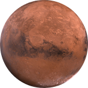

Марс
Марс – это четвертая по удаленности от Солнца планета.
Марс относится к планетам земной группы и назван
в честь древнеримского бога войны, аналога
древнегреческому Аресу. У Марса есть два естественных
спутника – Фобос и Деймос (обозначают «страх» и «ужас»).
Имена даны лунам в честь персонажей греческой
мифологии, сыновей Ареса. Марс известен людям с
древних времен, когда люди, наблюдали
за перемещением по небосводу красной звезды,
предвестника войн и катаклизмов. У Марса сильно
разреженная атмосфера и крайне неровная поверхность.
На планете есть горы, кратеры и долины.